不用命令玩转GITHUB（一）
对于大部分人开发人员来说可能都比较喜欢通过命令管理在GITHUB的项目，可能这是比较高效的一种方式。但我个人更喜欢使用客户端进行管理（这看脸的世界），我相信也有一小部分人和我有一样的爱好，如果是并且你还不会，那么可以看看我是如何不用命令玩转GITHUB的。
- 本文会假定你是一名开发者并对GIT工作流和GITHUG有简单了解
- 如果你需要和本文一起学习并操作，需要有GITHUB账户，如果你还没有请到GITHUB官网注册。
- 本文将会演示一个团队协作的完整流程
Step1. 创建仓库（项目）
访问GITHUB并登录你的账号，登录成功后在页面右上角点击
+创建一个仓库
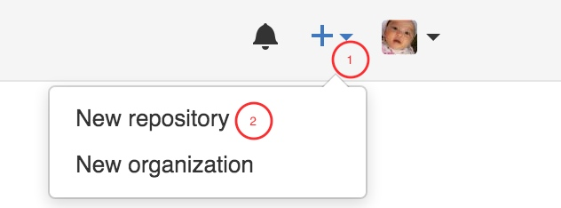填写信息，并确认创建仓库
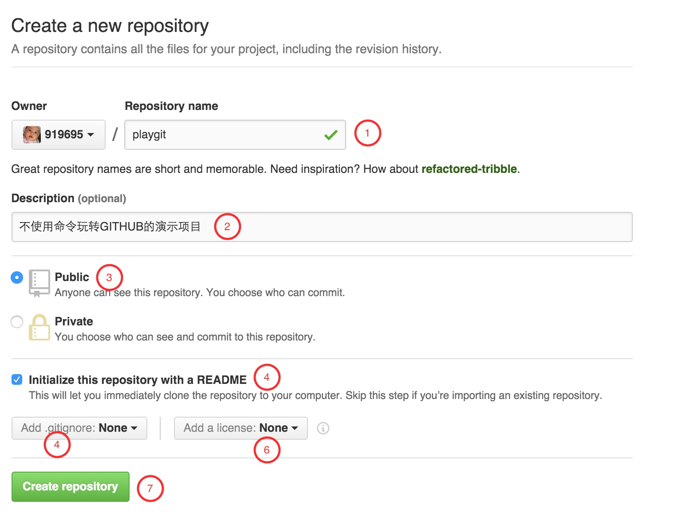
图解说明：
- 仓库名即项目名（GITHUB的一个仓库就代表我们的一个项目）
- 仓库描述
- 选择为公开仓库，私有仓库是收费的。
- 自动创建README文件，创建成功后可以自由修改
- 创建过滤文件（这很重要，因为往往我们需要过滤一些IDE的配置文件，敏感文文件，或则测试数据等等），根据实际情况设定，本文不需要设定
- 创建开源协议，根据你的项目设定，本文不需要设定
- 确认创建仓库
仓库创建成功后回自动跳转到仓库页面，同时会看到GITHUB帮我们自动创建的README文件。
Step.2 添加团队成员

图解说明：
- 点击Settings链接
- 点击Collaborators链接
- 输入团队成员GITHUB账号，如果没有就先注册
- 确定添加成员
成员添加成功后，就可以开始享受协同开发了。同时该成员会受到GITHUB的通知邮件，并且可以通过客户端clone这个仓库了，那么如何通过客户端进行仓库clone呢，接着往下看。
Step3. 安装GITHUB客户端
在GITHUB桌面版官网https://desktop.github.com/下载适合你操作系统的客户端，我自己用的是MAC OS，而在后面的教程中，还会用WIN7虚拟机配合演示。安装过程非常简单，这里就不赘述了。
安装完成后启动GITHUB客户端会提示登录，输入你的GITHUB账号和密码登录即可。
Step4. 克隆GITHUB账户中的仓库
启动并登录GITHUB客户端后，点击客户端左上角+会提示3个选项，分别是Add、Create、Clone，Add是指添加一个本地的GIT仓库到GITHUB客户端，Create是指创建一个新的GIT仓库，Clone是指从GITHUB账户中克隆项目到本地，我们选择Clone。
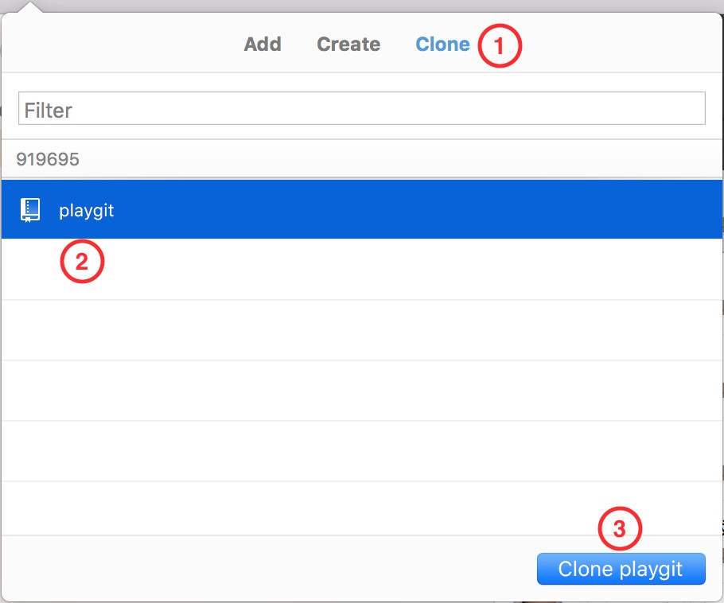
确定Clone后，GITHUB会提示选择一个本地目录，根据实际选择后确定即可。
Step5. 创建和提交版本
在GITHUG客户端左侧仓库列表选择我们刚刚Clone的仓库playgit，并右键单击，再选择
Open in Finder，接下来就可以自由的在这个目录下创建或修改的任意文件了。
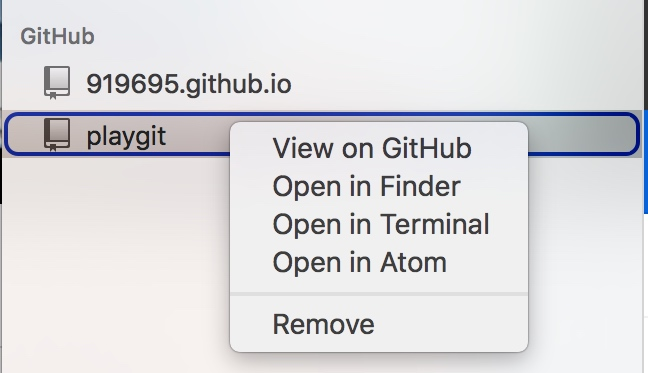修改README.md文件如下：
# playgit
不使用命令玩转GITHUB的演示项目
GITHUB是一个很棒的平台回到GITHUB客户端，就会看到变更的内容，确认本次变更无误我们就可以填写总结进行版本提交了。
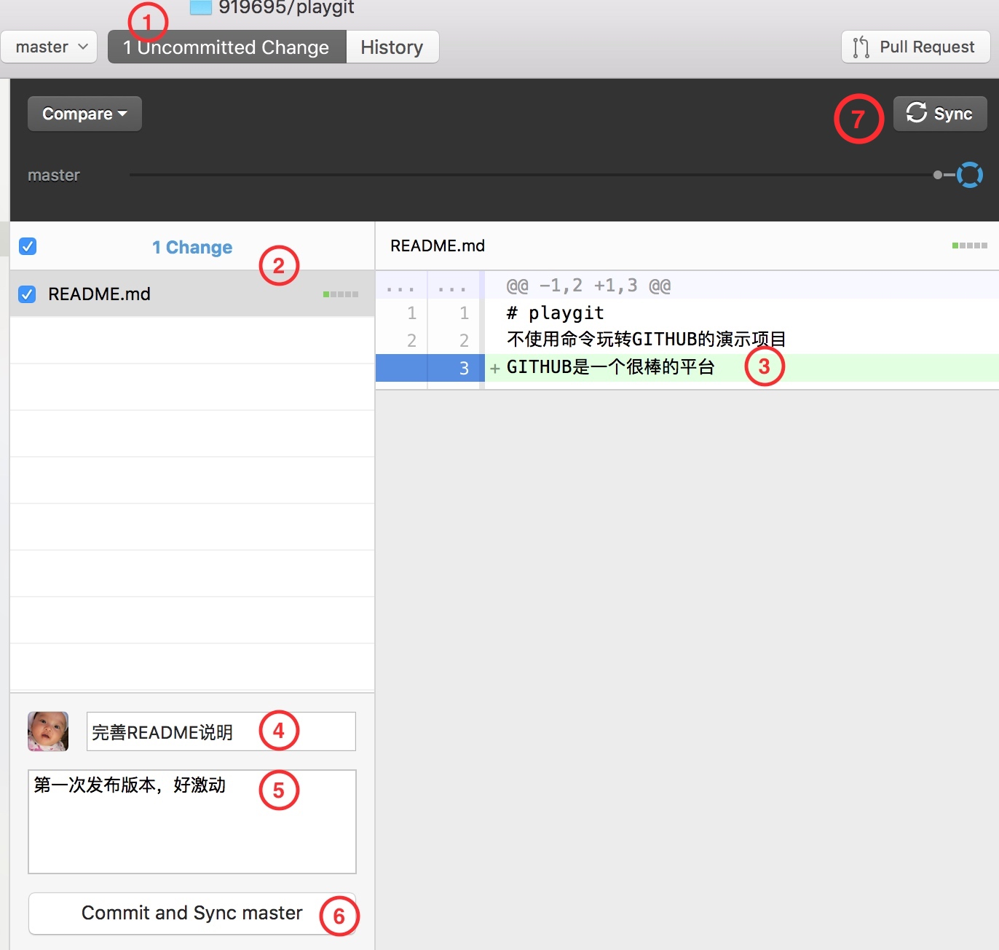
图解说明：
- 如果不在变更视图，则需要切回到变更视图
- 变更文件列表，选择文件客户端右侧就会显示文件内容
- 白色区块表示文件的原内容，绿色区块表示文件新增内容
- 填写本次版本变更总结
- 进行更详细的说明（如果有必要）
- 提交并同步到主分支（我们这里还没有其他分支）
- 以上操作都是本地的，在本地进行代码测试都OK后，点击Sync同步按钮就会将本地仓库同步到GITHUB平台。
- 同步后我们登录到GITHUB，就可以看到REAADME文件和我们本地的修改同步了

Step6. 版本回滚
通过Step5的方法我们进行几次版本提交来创建多个版本历史
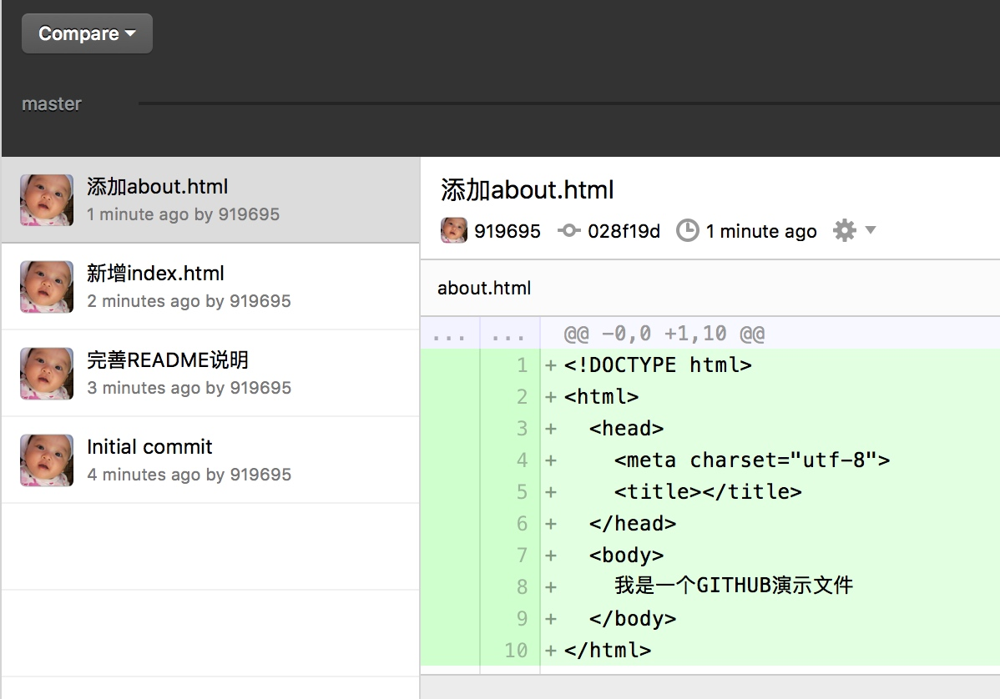
当我们提交了多个版本后，发现有问题，需要回到之前某个版本，那么就需要版本回滚。
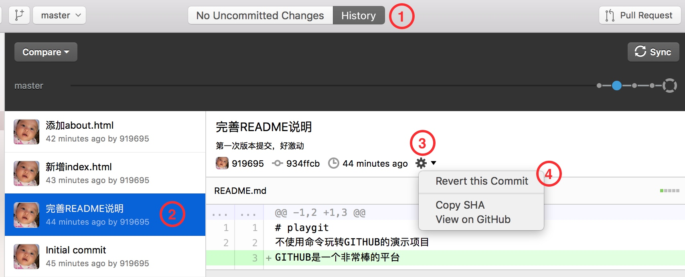
图解说明：
- 如果不在历史视图，则需要切换到历史视图
- 选择我们要回滚的版本，这里选择第2个版本
- 点击齿轮按钮
- 点击
Revert this Commit菜单
版本回滚后会显示Revert XXX
团队成员就可以清楚的了解到这个版本是说明来的，并且红色区块显示因为版本回滚减少了什么内容。

我们在本地仓库打开README.md文件也可以看到GITHUB是一个非常棒的平台这句话不存在了，因为被回滚了。
Step7. 协同工作与解决版本冲突
前面的操作我们都是自己一个人在进行，现在我们就开始团队协作吧。我在虚拟机（WINDOWS7系统）里也安装了GITHUB客户端，并登录了另外一个wwk1986账户（在Step2添加的团队成员）。
点击客户端的+按钮Clone playgit
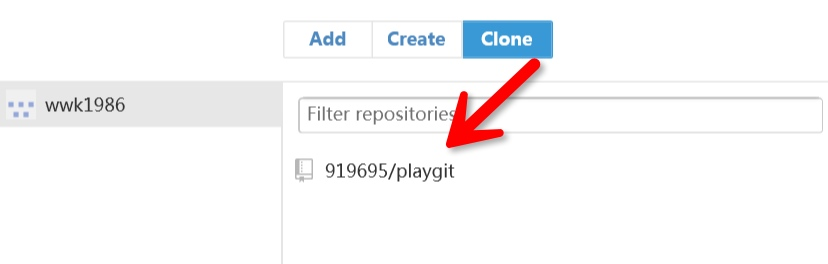
选择目录后GITHUB客户端很快的为我们同步了playgit仓库

可以看到账户919695操作的所有历史版本在wwk1986账户也有了。
现在有个问题出现了，919695和wwk1986在本地同时都做了修改，README.md文件，在同步时到底以谁为准呢？客户端或平台无法做出判断，所以GITHUB为我们提供了便捷的代码审查和合并，也就是我们需要手动去解决冲突。
919695首先提交了版本并同步到了GITHUB

WWK1986随后也再本地编辑了README并提交同步，但客户端提示了文件冲突，需要解决
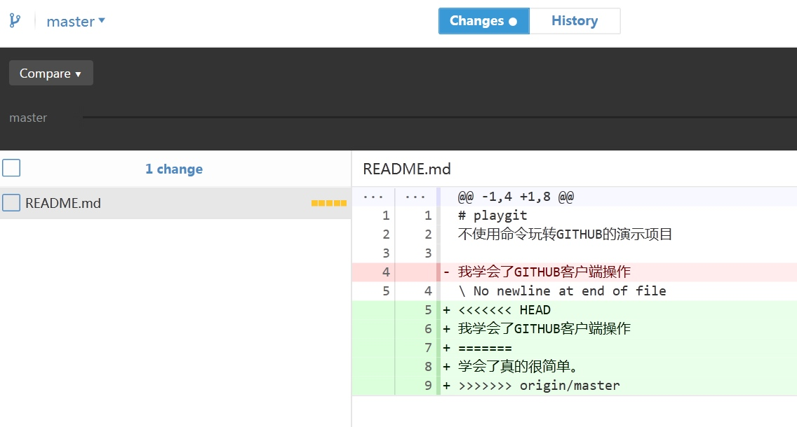
红色区块显示了本次冲突中减少的内容
绿色区块显示了本次冲突中增加的内容
而解决冲突的方法很简单，就是我们重新编辑README.md文件，手动删除GITHUB为我们添加的冲突注释，并确定最终完成的版本。这里我选择了把2个人添加的内容都保留
冲突内容：
# playgit
不使用命令玩转GITHUB的演示项目
<<<<<<< HEAD
我学会了GITHUB客户端操作
=======
学会了真的很简单。
>>>>>>> origin/master
修改后的内容：
# playgit
不使用命令玩转GITHUB的演示项目
学会了真的很简单。
我学会了GITHUB客户端操作
修改后保存回到GITHUB客户端看到可以提交版本变更了
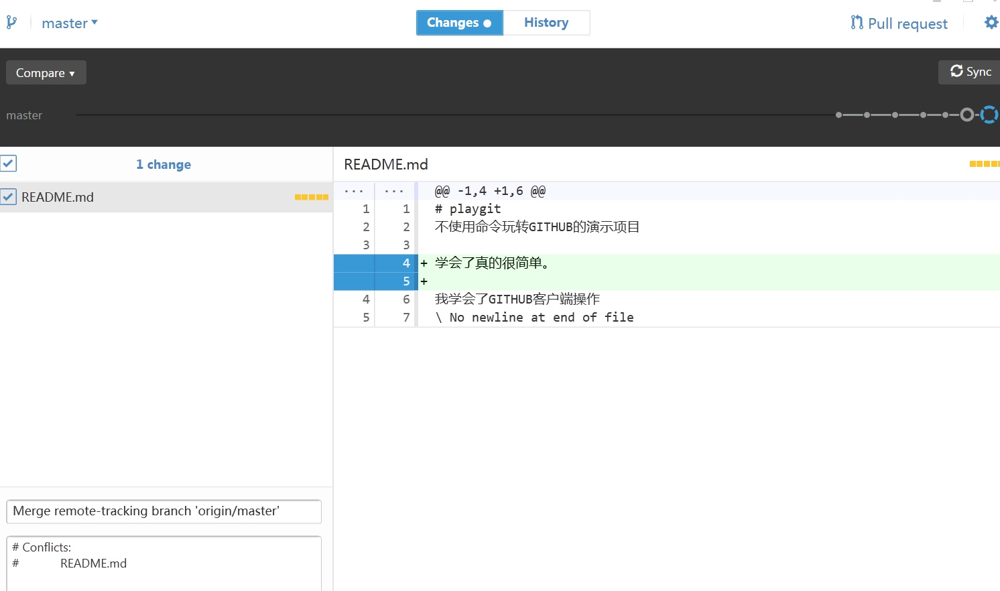
既然已经合并了版本，那么我们直接提交这个版本，回到仓库视图，选择刚刚提交的版本，仍然可以看到合并前的冲突内容。（下图是另一次版本冲突）
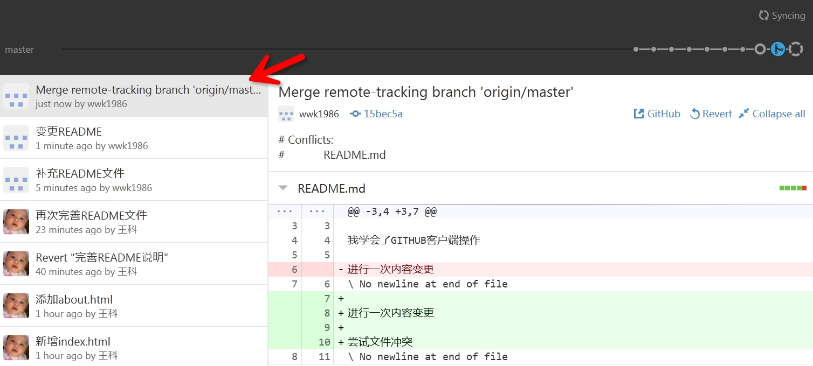
解决了版本冲突同步到服务器，并记得提醒你的队友使用客户端进行一次同步，避免再次版本冲突。
到这里，你已经学会了使用GITHUB客户端和团队进行日常的协同开发，但是往往这还不能满足我们一些大型项目合作，因为一个大型项目往往会存在多个分支版本，那么我们将在下一篇教程介绍，GITHUB的分支操作。
centos7安装与配置mongodb
一如既往的喜欢用yum方式安装程序，mongodb官方也有yum安装的帮助文档：https://docs.mongodb.org/manual/tutorial/install-mongodb-on-red-hat/
官方是全英文的，我这里简单的走一遍安装流程，另外官方文章中有一个2.6和一个3.x的安装包，我推荐2.6，因为市面上的资料几乎都是2.x的，所以避免少坑，还是选2.6就好。
执行命令
vim /etc/yum.repos.d/mongodb-org-2.6.repo
写入以下内容并保存：
[mongodb-org-2.6]
name=MongoDB 2.6 Repository
baseurl=http://downloads-distro.mongodb.org/repo/redhat/os/x86_64/
gpgcheck=0
enabled=1
执行命令
yum install -y mongodb-org
等待命令执行完成，就安装完了，接下来使用mongodb：
启动 service mongod start
停止 service mongod stop
重启 service mongod restart
开机启动 chkconfig mongod on
常用文件位置
配置文件 /etc/mongod.conf
数据文件 /var/lib/mongo
日志文件 /var/log/mongodb
Copyright © 2016-2018 Powered by 王科.